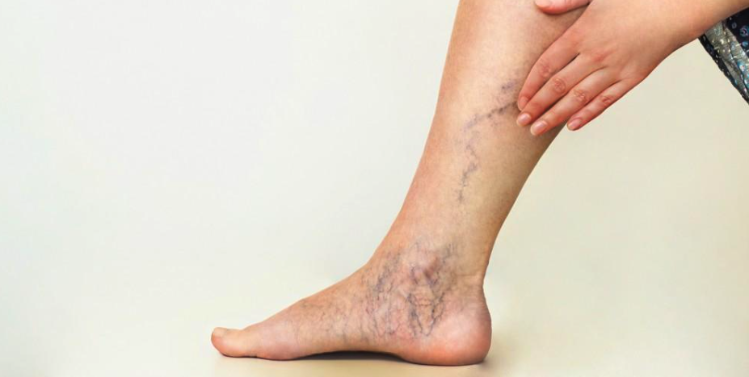
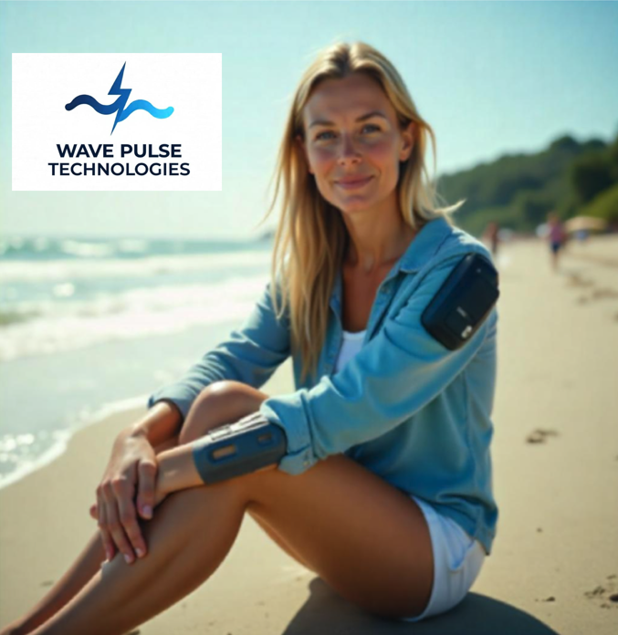

Help us raise $90K to bring TERS to life!
Imagine moving freely after years of leg discomfort—40 million Americans face this challenge daily. At Wave Pulse Technologies, we’re launching TERS, a non-invasive wearable, and need your support to raise $90K to make it a reality!
Leg issues affect 40 million Americans, causing discomfort from swelling or long periods of sitting, like on airplanes. Current options like costly procedures or inconvenient stockings often fall short, leaving many without a solution.
TERS is a lightweight, Velcro-attached device that uses gentle pulses to enhance comfort. Our prototype with three electrodes is ready—your support will refine it for everyday use! [Image: TERS on arm]
Prototype completed—back us to scale it!
With rising leg discomfort cases and outdated solutions, now’s the time for TERS. Our $90K goal funds design refinement and initial development. Pledge by July 2025 to secure early-bird pricing!
I’m Dr. Rob Wynden, founder of Wave Pulse Technologies, with a PhD from UCSF and a successful goBalto exit to Oracle. Our team of innovators is dedicated to improving lives—join us! [Image: Team photo]
Early-bird TERS + app access
TERS + 6-month app subscription
TERS + family pack (2 units)
Add color options (black, white, green)
Free travel case with each unit
6-month free app subscription